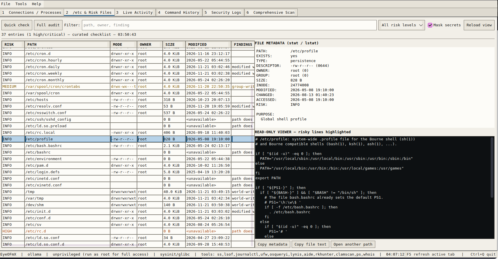

Know what your system is doing.
EyeOFmX is a native Linux inspector for sockets, processes, system files and security posture. Collectors are read-only.
Downloads ↓


Downloads
Match the architecture to uname -m.
VERIFY.sh
Loading checksums…